Professionnels
Heppy
Le framework HEPPY est un code développé au CERN dédié à l'analyse des données enregistrés par le detecteur CMS au LHC, au CERN.
La première partie de cette infrastructure est la partie CMSSW. Il s'agit d'un code C++ qui se charge de faire la traduction des signaux détectés en objet C++. CMSSW assure la conversion de la totalité de l'information du detecteur CMS.
Repo git : https://github.com/Arc-Pintade/cmg-cmssw
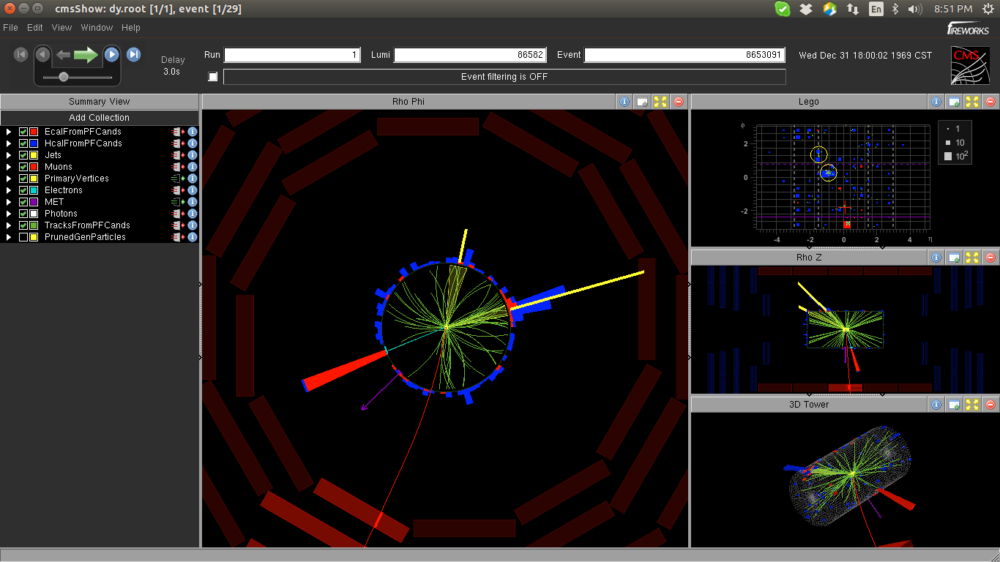
La second partie est le coeur de Heppy. Il s'agit d'un wrap Python des objets de CMSSW.
Repo git : https://github.com/Arc-Pintade/ttbar-analysis-heppy
La second partie est le coeur de Heppy. Il s'agit d'un wrap Python des objets de CMSSW.
Repo git : https://github.com/Arc-Pintade/PPFv2
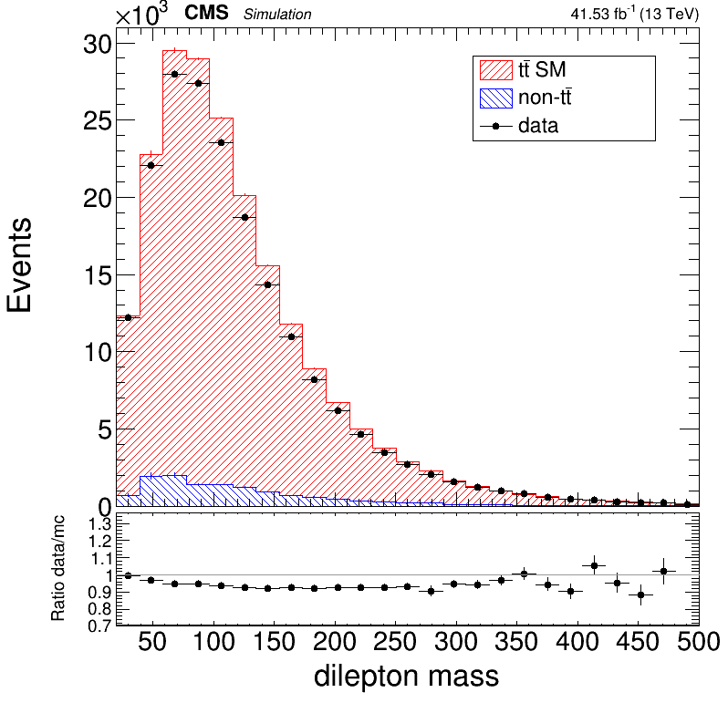
La première partie de cette infrastructure est la partie CMSSW. Il s'agit d'un code C++ qui se charge de faire la traduction des signaux détectés en objet C++. CMSSW assure la conversion de la totalité de l'information du detecteur CMS.
Repo git : https://github.com/Arc-Pintade/cmg-cmssw
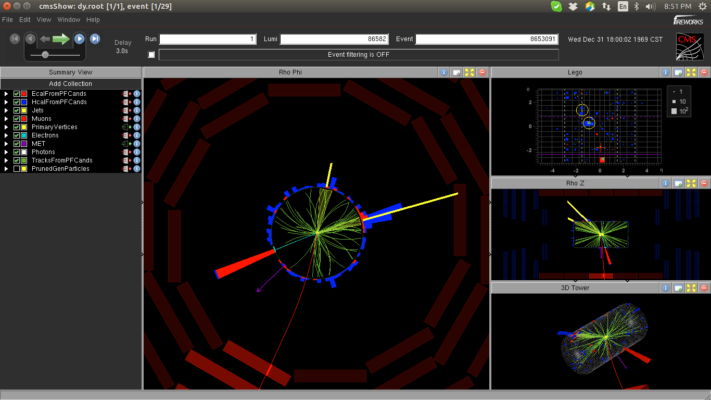
La second partie est le coeur de Heppy. Il s'agit d'un wrap Python des objets de CMSSW.
Repo git : https://github.com/Arc-Pintade/ttbar-analysis-heppy
La second partie est le coeur de Heppy. Il s'agit d'un wrap Python des objets de CMSSW.
Repo git : https://github.com/Arc-Pintade/PPFv2
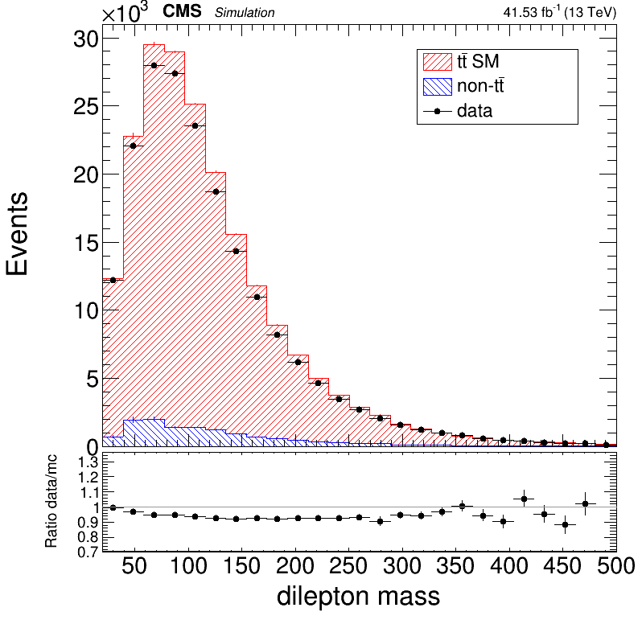


Personnels
Karlul-Engine
Le Karlul-Engine est un éditeur de jeux 2D pour linux, comprennant un éditeur de map, ainsi qu'un systeme de gestion d'évènements. J'ai développé le Karlul-Engine en collaboration Grégoire Uhlrich, ami cher et collegue de thèse, durant notre temps libre.
Développé (from scratch) avec une librairie grpahique très bas niveau : SFML, le développement du Karlul-Engine aura été une un apprentissage incroyable sur le plan programmation mais aussi sur la construction d'un jeuxvideo (du brain-storming audacieu, aux diverses imprévus et autres bugs).
Malrgé le fait que le Karlul-Engine soit le plus gros projet non-professionnel sur lequel j'ai travaillé, Grégoire et moi avont du arréter le développement du moteur pour des raisons de thèse chronophage.
Il est à noter que differents assets (grpahismes, tilsets, fonts, musiques, ..) on été eux aussi créés par mes soins, spécialement pour le Karlul-Engine, au nom de l'indépendance artistique de l'engine.
Ces différents assets sont disponibles sur ce meme site : là.
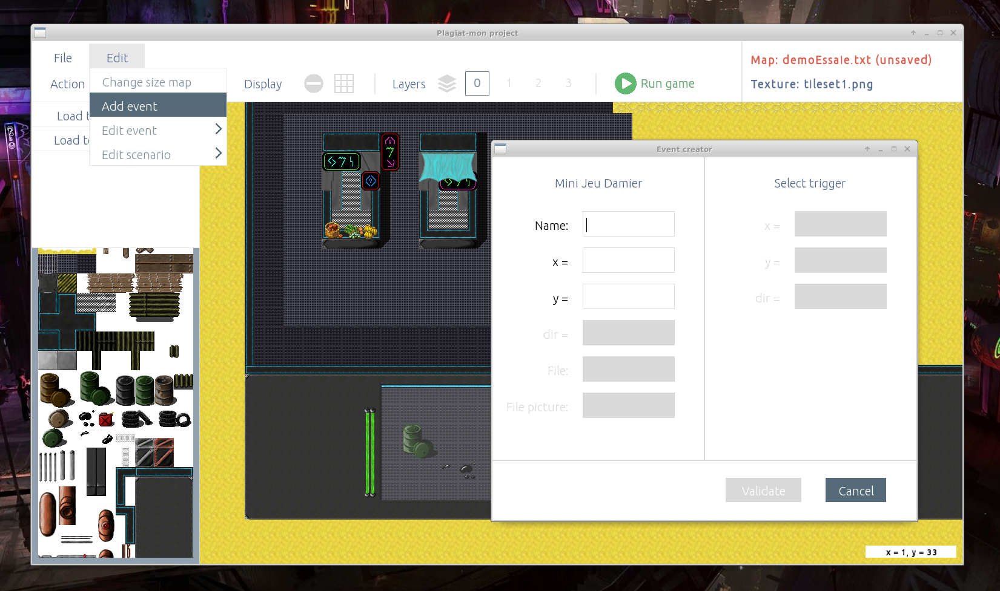 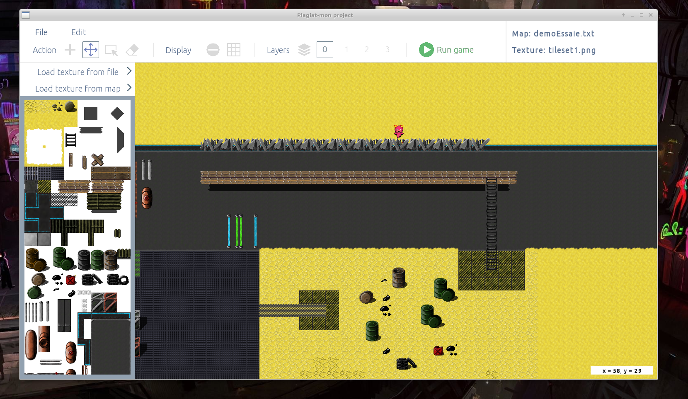
Développé (from scratch) avec une librairie grpahique très bas niveau : SFML, le développement du Karlul-Engine aura été une un apprentissage incroyable sur le plan programmation mais aussi sur la construction d'un jeuxvideo (du brain-storming audacieu, aux diverses imprévus et autres bugs).
Malrgé le fait que le Karlul-Engine soit le plus gros projet non-professionnel sur lequel j'ai travaillé, Grégoire et moi avont du arréter le développement du moteur pour des raisons de thèse chronophage.
Il est à noter que differents assets (grpahismes, tilsets, fonts, musiques, ..) on été eux aussi créés par mes soins, spécialement pour le Karlul-Engine, au nom de l'indépendance artistique de l'engine.
Ces différents assets sont disponibles sur ce meme site : là.
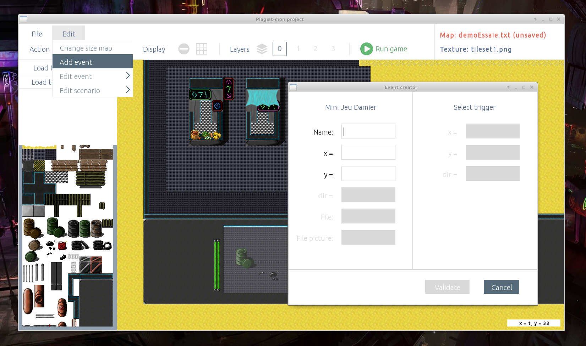 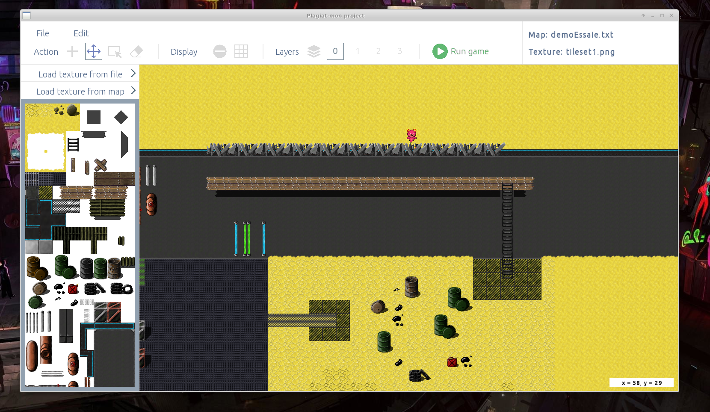
Repo git : https://github.com/GregoireUhlrich/Engine
Gaminal
Au départ il s'agissait d'un jeu de type escape game à l'interieur d'un terminal. Mais au fil de la création, les features s'accumulant, j'ai fini par coder ce programme comme un clone d'émulateur de terminal.
Ce programme est finalement devenue une sorte de laboratoire de programmation C++, avec ajout régulier de features diverses et variés (interpreteur interne, gestion de fichiers et d'arborescence, ...).
La librairie graphique utilisée pour ce programme est SFML.
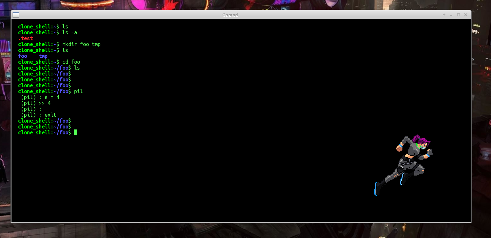
Ce programme est finalement devenue une sorte de laboratoire de programmation C++, avec ajout régulier de features diverses et variés (interpreteur interne, gestion de fichiers et d'arborescence, ...).
La librairie graphique utilisée pour ce programme est SFML.
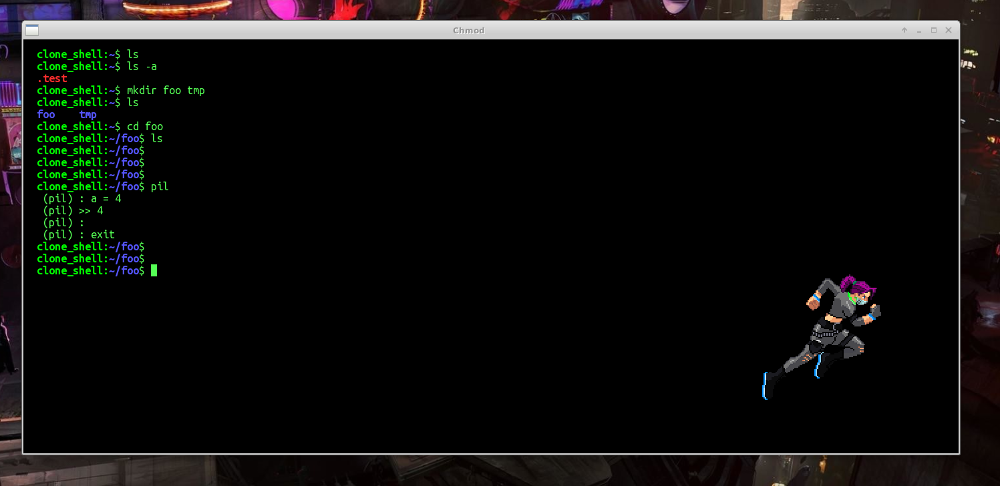
Repo git : https://gitlab.com/Arc-Pintade/gaminal
Noob Engine
Ce petit programme est un moteur 3D en vu FPS qui avait surtout pour but d'apprendre à manipuler OpenGL. La photo ci-jointe montre que le sol, la skybox est les éléments 3D texturés sont implémentés. Le developpement est arrété avant l'implémentation des collisions.
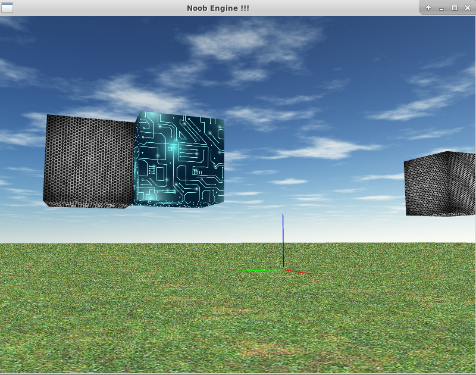
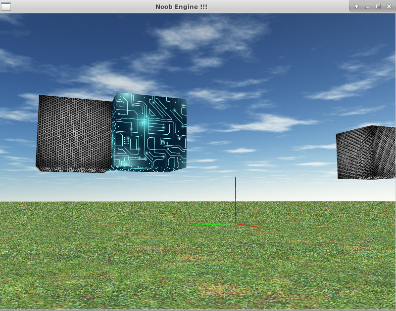
Repo git : https://gitlab.com/Arc-Pintade/noobengine3d
Geo-IP
Geo-IP est un petit script (in-shell) qui permet de récuperer, à partir d'une adresse IP à fournir en paramètre, quelques informations tels que la localisation (villes, pays, latitude, longitude, ...) sur le pocesseur de l'IP.
NB : l'absence de paramètre lancera Geo-IP pour le post emetteur.
NB : l'absence de paramètre lancera Geo-IP pour le post emetteur.
Repo git : https://gitlab.com/Arc-Pintade/geoip
Arc-Latex
Le langage Latex est très utilisé dans le monde scientifique. Si de nombreux IDE existent proposant des compilateurs internes. Il est parfois commode de lancer une compilation depuis le terminal.
C'est le but d'Arc-Latex, qui permet de lancer des compilation de fichier latex prenant en compte la présence ou non des fichiers de bibliographie et de meta-post.
C'est le but d'Arc-Latex, qui permet de lancer des compilation de fichier latex prenant en compte la présence ou non des fichiers de bibliographie et de meta-post.
Repo git : https://gitlab.com/Arc-Pintade/arclatex